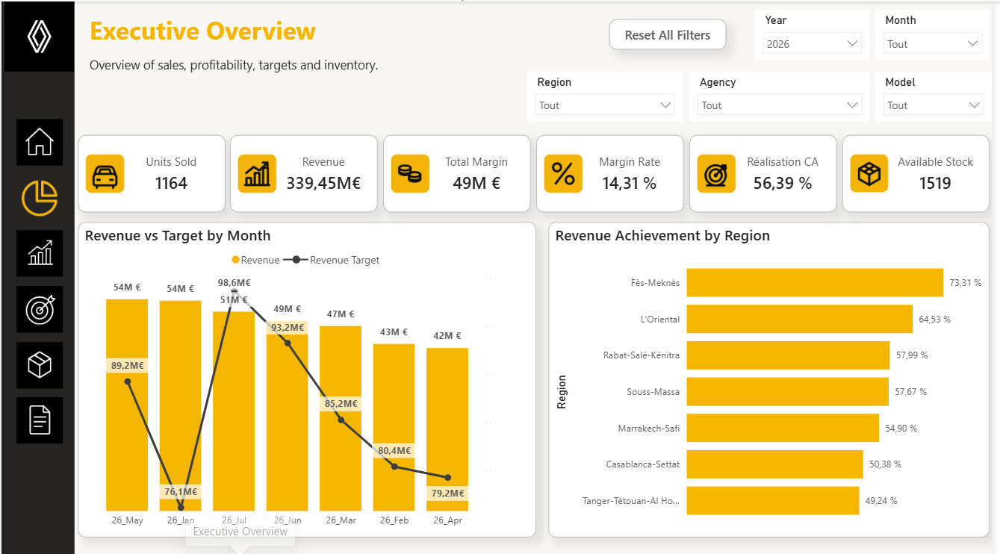
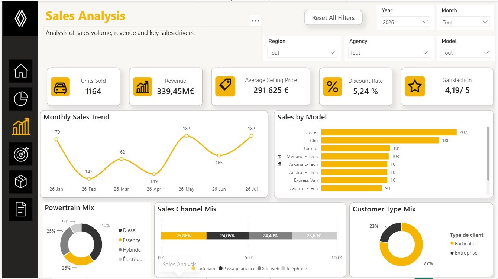
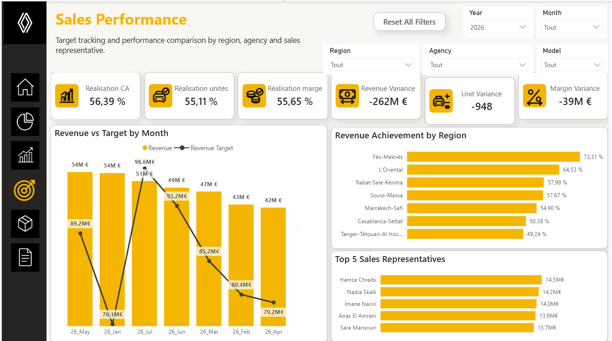
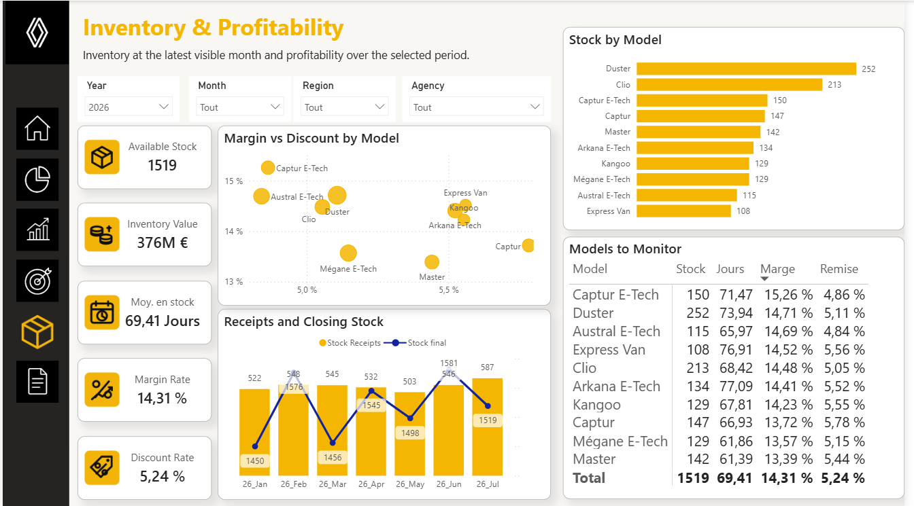
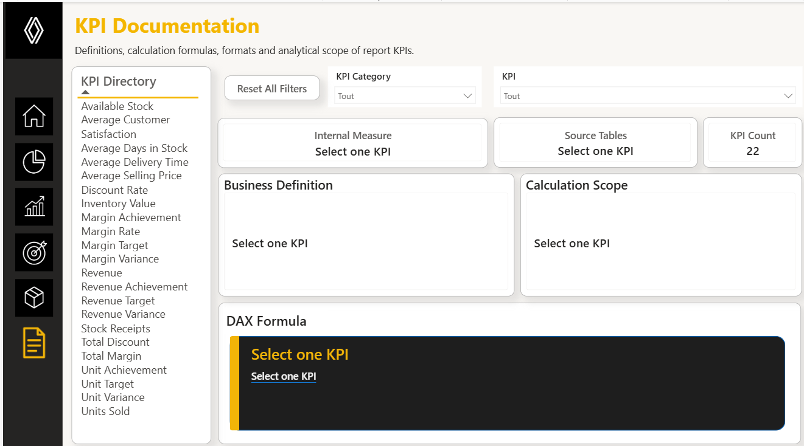

Power BI · Automotive Analytics · Portfolio Project
Renault Morocco
Automotive Sales Dashboard
Projet Power BI de bout en bout consacré au pilotage des ventes automobiles au Maroc. Le rapport couvre la performance commerciale, les objectifs, la rentabilité, le stock et la documentation des KPI.
Contexte du projet
Besoin métier
Créer une vue décisionnelle unique pour analyser les ventes, le chiffre d’affaires, la marge, les remises, les objectifs commerciaux et la disponibilité du stock par période, région, agence et modèle.
Approche
Construction d’un modèle analytique Power BI avec préparation des données, mesures DAX, filtres métier cohérents, navigation entre pages et documentation centralisée des indicateurs.
Indicateurs suivis
SalesUnits Sold
RevenueRevenue
ProfitabilityTotal Margin
ProfitabilityMargin Rate
PricingAverage Selling Price
DiscountDiscount Rate
CustomerAverage Satisfaction
InventoryAvailable Stock
InventoryInventory Value
InventoryAverage Days in Stock
TargetsRevenue Achievement
Governance22 documented KPIs
Points techniques
Modèle & calculs
- Modélisation orientée analyse commerciale.
- Mesures DAX pour ventes, marges, remises, objectifs et écarts.
- Filtres par année, mois, région, agence et modèle.
- Analyse Target vs Actual et calcul des variances.
Expérience utilisateur
- Navigation entre 6 pages métier.
- Reset global des filtres.
- Analyse régionale et par représentant commercial.
- Documentation dynamique des KPI et formules DAX.
Pages du dashboard




